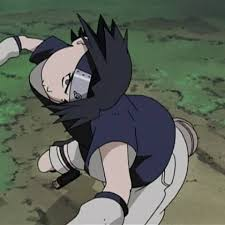

Estilos e técnicas de animação japonesas
1 - Itano Circus
- É um estilo icônico de animação criado por Ichirō Itano, um animador e diretor.
- Este estilo consiste em sequências frenéticas onde há aeronaves, ou outros personagens voando enquanto fazem manobras acrobáticas extremas enquanto desviam de diversos projéteis geralmente teleguiados, movendo em espirais sinuosas.
-Inpiração bizarra: Segundo a lenda, Itano concebeu o conceito após amarrar 50 fogos de artifício em sua própria motocicleta e acendê-los enquanto andava em uma praia, vivenciando em primeira mão a sensação de ser cercado por projéteis giratórios.
2 - Kanada Style (Kanada-ryu)
- Uma abordagem lendária de animação criada por Yoshinori Kanada nas décadas de 1970, revolucionou ao priorizar impacto e energia aos movimentos acima do realismo e fluidez tradicional.
- Geralmente contém menos frames porém com poses extremas, bastante distorção e usa bastante do timing ao favor de expressar impacto e fluidez, e geralmente acompanha com bastantes efeitos visuais geométricos (raios de energia pontiagudos, lens flares, etc.)
2 - Norio Style
- Estilo nomeado em homenagem ao grande animador Norio Matsumoto, sendo um dos maiories nomes e mais influentes na indústria de animação moderna, famoso por criar sequências de ação icônicas cheias de vida.
- Se caracteriza por ter uma grande fluidez e dinamismos extremos, com movimentos geralmente mais realistas; Distorções de proporção, criando sensação de impacto e velocidade, resultando de vez em quando ao pausar cenas o espectador ver um frame 'engraçado'; Efeitos de Impacto com destruições exageradas, e também usando ângulos de câmera ousados


4 - Obari Style
- Uma abordagem lendária de animação criada por Yoshinori Kanada nas décadas de 1970, revolucionou ao priorizar impacto e energia aos movimentos acima do realismo e fluidez tradicional.
- Geralmente contém menos frames porém com poses extremas, bastante distorção e usa bastante do timing ao favor de expressar impacto e fluidez, e geralmente acompanha com bastantes efeitos visuais geométricos (raios de energia pontiagudos, lens flares, etc.)